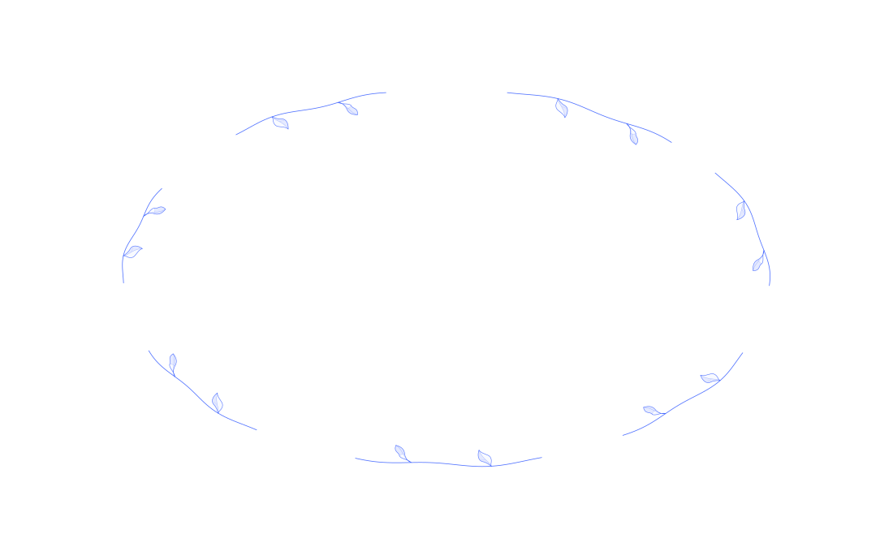

A shared view
of delivery.
Leaders could examine performance across products, teams, regions and lines of business, then investigate the projects behind the overall picture.
κοράλλι · Greek for coral
OUR WORK
We work in short cycles of research, building and learning. Each cycle gives us something to examine with the client and helps us decide what to do next.
The question can change as we understand it better. So can the thing we build.
SEE THE WORK IN PRACTICE ↓AN ANONYMISED BANK ENGAGEMENT
A global bank wanted to understand the performance of a project portfolio representing more than $100 million in annual investment.
The records were fragmented, and different parts of the organisation measured delivery in different ways. Before a dashboard could be useful, we needed to agree what it should measure.
We worked alongside the bank in two-week sprints, combining stakeholder research, operational experience, data analysis and development. Regular conversations with the people using the work shaped each iteration.
Understand what matters.
We spoke with stakeholders about the decisions they needed to make, which measures would help and what the data could support. We kept a measure only if a leader could act differently depending on its value.
Making the project our common unit of measurement gave us a basis for comparing delivery across teams and reconciling records from different systems.
Put the thinking to work.
We built dashboards that let users move from a portfolio-wide view into the detail behind each measure.
Users examined the results, challenged their interpretation and identified what was missing. Those conversations shaped the dashboards and the definitions underneath them.
Make it part of the work.
We deployed the dashboards through the bank’s reporting environment and used them to analyse portfolio performance.
The data foundation opened up further questions about differences in delivery, recurring patterns and what historical data could tell us about future performance.
Each phase informed the next. Building and using the dashboards brought us back to questions about the data, the measures and what leaders needed to know.
Leaders could examine performance across products, teams, regions and lines of business, then investigate the projects behind the overall picture.
The bank’s proposed indicators became measures that could be traced back to source systems, with a named owner for each number. Time and cost of delivery could be understood through shared definitions.
The reconciled data supported analysis beyond routine reporting, giving the bank a basis for investigating what influences performance.
These examples show how other kinds of work could unfold. Choose a project and select a stone to explore a step.
GOVERNANCE
Decide where judgement sits, test how AI behaves and keep the controls close to the work.

01 / Go and See
Follow a real use case and the people who rely on it. Establish what the system is meant to do, what can go wrong and which decisions matter.
SELECT A STONE TO EXPLORE
A working approach to oversight, evaluation and accountability.
7 STEPS / AN ITERATIVE PATHBuilding reveals gaps in our understanding. Using the result raises further questions.
We keep those activities connected throughout the engagement. A finding might become a measure, a working tool or a different way of organising the work. We test it with the people who will use it, then decide together what to pursue next.
TALK TO KORALLI ↗